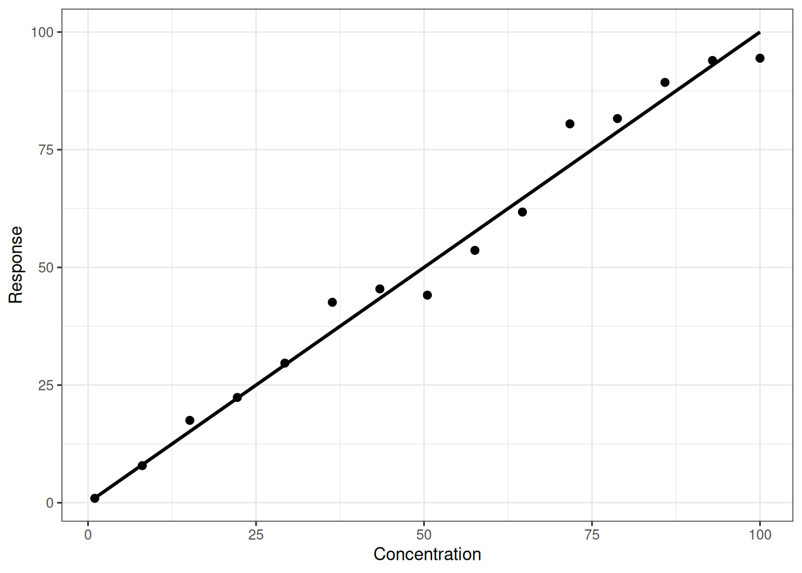
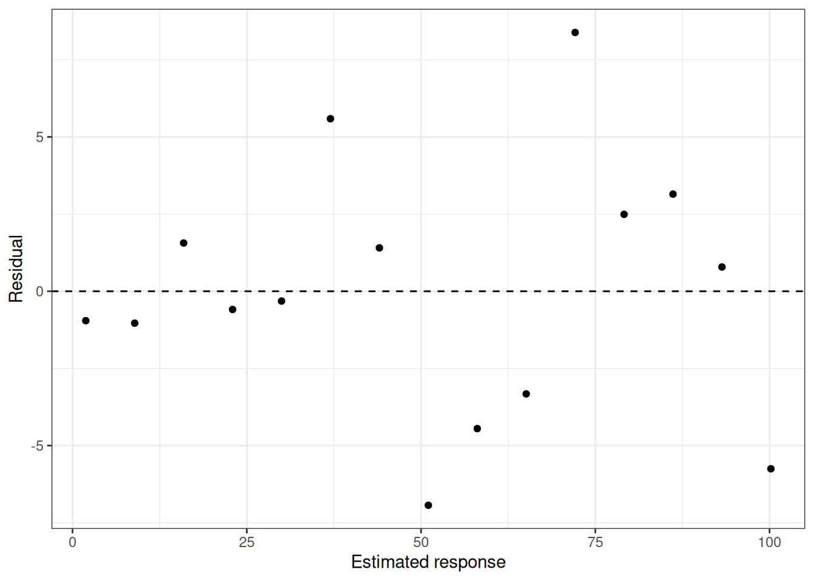

A calibration curve can be perfectly linear and still be statistically uncomfortable. The reason is that OLS assumes more than a straight mean response. It also assumes that the response variability is approximately constant across the calibration range.
Many analytical methods do not behave that way. At low levels, signal processing and background noise may dominate. At higher levels, the absolute scatter can increase with response. The result is heteroscedasticity: the variance changes with concentration.
This episode keeps the response linear and changes only the measurement variability. That separation is useful for analysts because it shows that linearity and constant variance are different questions.
Under constant RSD, absolute response standard deviation increases with concentration.
The response is still linear, but the scatter is not constant. A high-concentration point is expected to have a larger absolute residual than a low-concentration point. Treating those residuals as equally informative is the assumption that we will challenge in the next episode.
plot_design( calibration_data[["15 x 1"]], mean_fun)

The calibration can look linear even when variance clearly changes with concentration.
Code
plot_residuals(models[["15 x 1"]])

Residuals from OLS show the kind of pattern analysts should inspect.
A residual plot is not decoration. It is a check of whether the model is describing the measurement process. If the residual spread grows with fitted response, the calibration line may still be linear, but the OLS uncertainty model is no longer appropriate.
OLS prediction performance when absolute variance changes with concentration.
design
rmse
coverage
mean_interval_width
heteroscedasticity_detected
15 x 1
5.803
0.960
23.496
FALSE
5 x 3
5.954
0.985
24.038
TRUE
3 x 5
5.702
0.952
22.222
TRUE
The diagnostic test is intentionally simple, and with only 15 measurements it will not detect every heteroscedastic calibration. That is a practical lesson in itself. A small calibration experiment may not contain enough information to estimate a variance pattern reliably, even when that pattern is real.
Take-home message
Linearity is not the whole calibration story. A method can have a straight mean response and still require a variance-aware analysis. When residual spread changes across the range, the next question is not whether the calibration is linear, but whether every point should have the same influence on the fitted line.
Source Code
---title: "Calibration curves are not only about linearity"author: "Calibration simulation series"format: html: toc: trueexecute: echo: true warning: false message: false---# The hidden assumptionA calibration curve can be perfectly linear and still be statistically uncomfortable. The reason is that OLS assumes more than a straight mean response. It also assumes that the response variability is approximately constant across the calibration range.Many analytical methods do not behave that way. At low levels, signal processing and background noise may dominate. At higher levels, the absolute scatter can increase with response. The result is heteroscedasticity: the variance changes with concentration.This episode keeps the response linear and changes only the measurement variability. That separation is useful for analysts because it shows that linearity and constant variance are different questions.# Setup```{r}#| label: resourceslibrary(here)library(data.table)library(ggplot2)library(knitr)source(here("R", "design_functions.R"))source(here("R", "weight_functions.R"))source(here("R", "fit_functions.R"))source(here("R", "inversion_functions.R"))source(here("R", "metrics_functions.R"))source(here("R", "plotting_functions.R"))source(here("R", "prediction_functions.R"))source(here("R", "response_functions.R"))source(here("R", "simulation_functions.R"))source(here("R", "variance_functions.R"))``````{r}#| label: setupset.seed(123)mean_fun <- f_linearsigma_fun <-function(x) {sigma_constant_rsd( x,mean_fun = mean_fun,rsd =0.10 )}designs <-list("15 x 1"=design_15x1(1, 100),"5 x 3"=design_5x3(1, 100),"3 x 5"=design_3x5(1, 100))```# The variance pattern```{r}#| label: variance-pattern#| fig-cap: "Under constant RSD, absolute response standard deviation increases with concentration."variance_grid <-data.table(x =seq(1, 100, length.out =200))variance_grid[, sigma :=sigma_fun(x)]variance_grid[, rsd := sigma /mean_fun(x)]ggplot(variance_grid, aes(x = x, y = sigma)) +geom_line(linewidth =1) +labs(x ="Concentration",y ="Response standard deviation" ) +theme_bw()```The response is still linear, but the scatter is not constant. A high-concentration point is expected to have a larger absolute residual than a low-concentration point. Treating those residuals as equally informative is the assumption that we will challenge in the next episode.# Simulate OLS calibrations```{r}#| label: calibration-datacalibration_data <-lapply( designs, simulate_dataset,mean_fun = mean_fun,variance_fun = sigma_fun)models <-lapply( calibration_data, fit_ols)``````{r}#| label: calibration-plot#| fig-cap: "The calibration can look linear even when variance clearly changes with concentration."plot_design( calibration_data[["15 x 1"]], mean_fun)``````{r}#| label: residual-plot#| fig-cap: "Residuals from OLS show the kind of pattern analysts should inspect."plot_residuals(models[["15 x 1"]])```A residual plot is not decoration. It is a check of whether the model is describing the measurement process. If the residual spread grows with fitted response, the calibration line may still be linear, but the OLS uncertainty model is no longer appropriate.# Predict unknown samples```{r}#| label: predictiontest_data <-generate_test_set(n =1000,xmin =1,xmax =100,mean_fun = mean_fun,variance_fun = sigma_fun)prediction_tables <-lapply( models, predict_calibration_model,test_data = test_data,variance_fun = sigma_fun)``````{r}#| label: performance-tableperformance_table <-data.table(design =names(prediction_tables),rmse =sapply(prediction_tables, metric_rmse),coverage =sapply(prediction_tables, metric_coverage),mean_interval_width =sapply(prediction_tables, metric_mean_pi_width),heteroscedasticity_detected =sapply(models, metric_hetero_detected))kable( performance_table,digits =3,caption ="OLS prediction performance when absolute variance changes with concentration.")```The diagnostic test is intentionally simple, and with only 15 measurements it will not detect every heteroscedastic calibration. That is a practical lesson in itself. A small calibration experiment may not contain enough information to estimate a variance pattern reliably, even when that pattern is real.# Take-home messageLinearity is not the whole calibration story. A method can have a straight mean response and still require a variance-aware analysis. When residual spread changes across the range, the next question is not whether the calibration is linear, but whether every point should have the same influence on the fitted line.